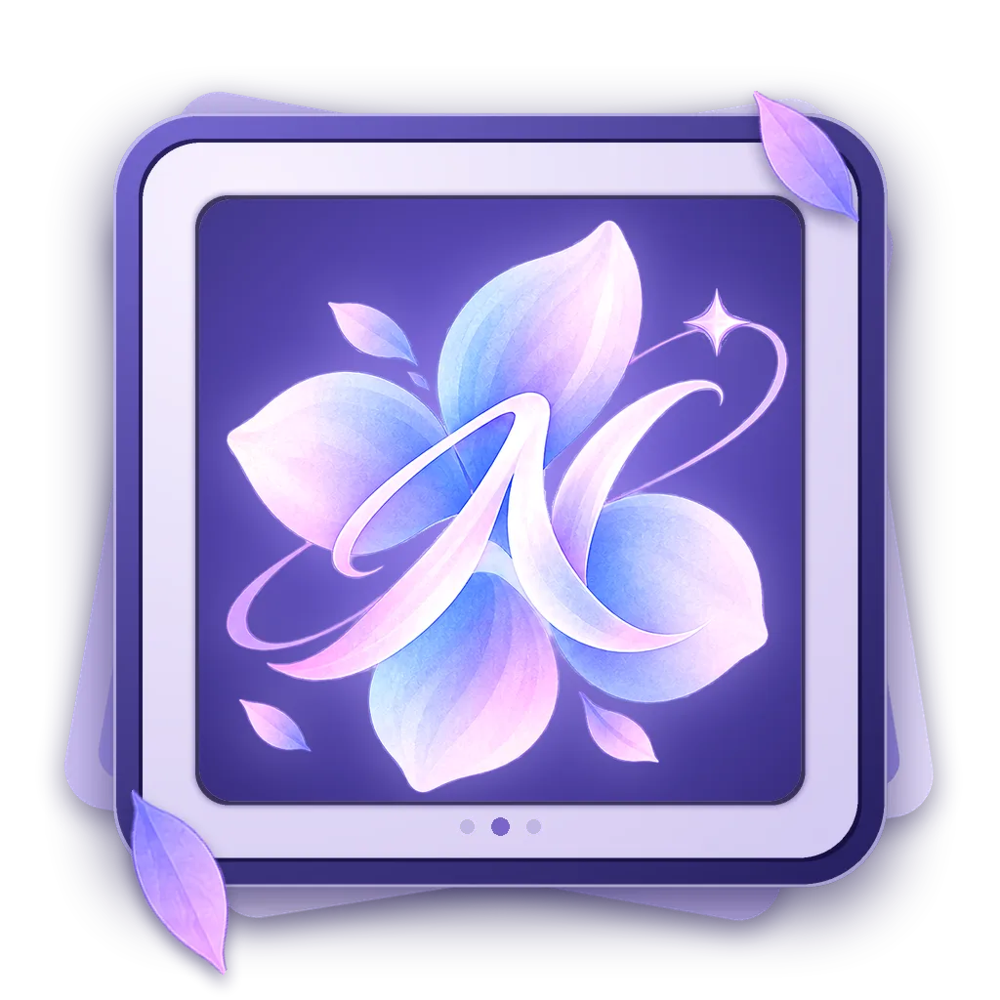

Neroa 이용 가이드스마트 TV & 태블릿 감성 디지털 액자 세부 사용 설명서
하단 메뉴 [앨범] ➔ [내 앨범] ➔ [사진 선택 (+)]을 클릭하여 기기 내 사진 폴더를 선택하고 새 앨범을 생성합니다.
[Google Photos] 및 [Google Drive] 탭에서 원격 클라우드 사진을 간편하게 앱으로 다운로드하여 재생할 수 있습니다.
스마트폰과 액자 기기를 같은 Wi-Fi에 연결 후, [앨범] ➔ [QR 공유] 탭의 QR 코드를 스마트폰 카메라로 스캔합니다.
열리는 웹 페이지에서 전송할 사진들을 고른 뒤 [전송]을 누르면 액자의 [내 앨범]으로 무선 즉시 등록됩니다.
로컬 Wi-Fi 무선 전송은 외부 중앙 서버를 거치지 않고 기기 간 직접 연결(Direct Local HTTP) 방식으로 안전하게 전송됩니다.
[위젯 설정] 메뉴에서 시계, 날짜, 실시간 날씨, 캘린더, 비디오, 디지털 프레임 위젯을 자유롭게 켜고 끕니다.
3x3 오버레이 그리드를 통해 원하는 화면 위치로 위젯을 터치/리모컨으로 손쉽게 이동할 수 있습니다.
[음악 설정] 메뉴에서 내 음악 MP3 파일을 추가하거나, 빗소리, 파도소리, 모닥불 등 감성 자연 음향 BGM을 재생합니다.
[앱 설정] 메뉴에서 매일 자동 켜짐/꺼짐 스케줄 시간 예약 및 부팅/충전시 자동 슬라이드쇼 실행을 설정합니다.
Smart TV & Tablet Digital Photo Frame Detailed Manual
Click bottom menu [Albums] ➔ [My Albums] ➔ [Add Photos (+)] to select local folders and create new slideshow albums.
Seamlessly download and play remote cloud photos from [Google Photos] and [Google Drive] tabs.
Connect phone and frame to same Wi-Fi, then scan QR under [Albums] ➔ [QR Share] using phone camera.
Select photos on web page and tap [Send] to instantly register them into [My Albums] on your frame.
Local Wi-Fi transfer operates directly peer-to-peer (Direct Local HTTP) without passing through central servers.
Enable or disable clock, date, live weather, calendar, video, and frame widgets in [Widget Settings].
Easily move widgets across 9 screen positions using remote control or touch grid overlay.
Add local MP3 files in [Music Settings] or stream ambient nature soundscapes like rain, ocean waves, and campfire.
Configure daily auto power ON/OFF schedules and auto slideshow launch on boot or charger connection in [App Settings].
スマートTV＆タブレット デジタルフォトフレーム詳細マニュアル
下部メニュー[アルバム] ➔ [マイアルバム] ➔ [写真選択 (+)]をタップして端末内のフォルダから新しいアルバムを作成します。
[Google Photos] および [Google Drive] タブからクラウド写真を簡単に取得・再生できます。
スマホと額縁端末を同じWi-Fiに接続後、[アルバム] ➔ [QR共有] タブのQRコードをスマホでスキャンします。
開いたWebページで転送する写真を選び[送信]を押すと、額縁の[マイアルバム]に直接登録されます。
ローカルWi-Fi転送は外部サーバーを経由しない直接通信(Direct Local HTTP)で安全に転送されます。
[ウィジェット設定]で時計、日付、リアルタイム天気、カレンダー、動画、デジタルフレームウィジェットのON/OFFを設定できます。
3x3グリッド位置オーバーレイを使用してリモコンやタッチ操作で自由な位置へ移動できます。
[音楽設定]で端末内のMP3音楽を追加したり、雨の音、波の音、たき火などの自然環境音BGMを再生できます。
[アプリ設定]で毎日の自動ON/OFFタイマー予約や端末起動/充電時のスライドショー自動実行を設定できます。